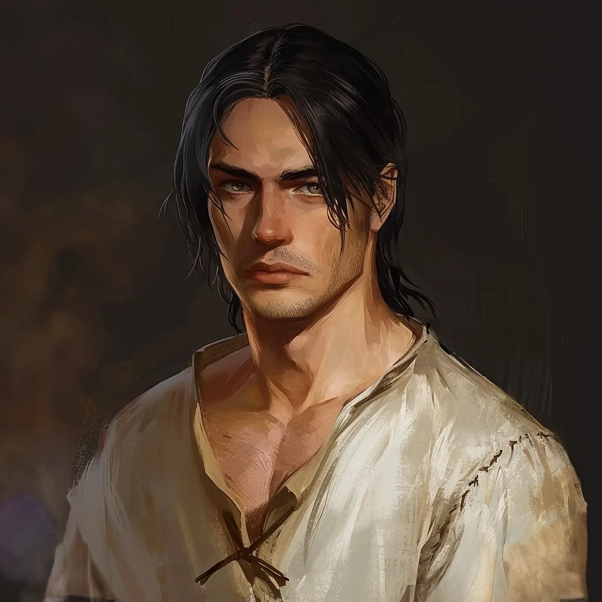

NSCs
Milivoj
Totengräber aus Vallaki

Beschreibung: Ein schöner Mann. Er ist 19-20 Jahre, ist Totengräber der St. Andrals Kirche und Hausmeister. Er macht sich Sorgen. Er ist ein ehemaliges Waisenkind, spielt mit den Kindern oder gibt ihnen Werkzeug, um Spielzeug selbst zu machen. Er ist wie ein großer Bruder für die Kinder.
Ihm hat es nicht gefallen, dass die drei Kinder abgehauen sind.
Er ist krank und hat viele Bisswunden am ganzen Körper. Er ist den ganzen Tag in seinem Zimmer und schwer krank, von Fieberträumen geplagt, schweißnass.
Als ehemaliges Waisenkind und Bewohner des St. Andrals Waisenhaus lebt Milivoj nun im Waisenhaus als Hausmeister und hilft bei der Betreuung der Kinder. Milivoj gibt alles, was er verdient, um das Haus zu unterstützen und sich um seine Pflegegeschwister zu kümmern. Die Kinder lieben ihn und verehren ihn als ihren älteren Bruder. Milivoj ist neunzehn Jahre alt, müde und mürrisch. Aber wenn es um die anderen Kinder geht, wird er sofort sanftmütig.
>
Leider hat Milivojs starkes Mitgefühl für die Kinder des Waisenhauses auch die Aufmerksamkeit von Felix' Dämon auf sich gezogen. Kurz nach Felix' Ankunft begann der Dämon an Milivojs Seele zu nagen und machte ihn krank. Was mit einem leichten Husten begann, eskalierte langsam. Schließlich konnte Milivoj seine Arbeit kaum noch bewältigen und erklärte sich bereit, die Knochen des St. Andral zu stehlen, um seinen Lohnverlust auszugleichen. Mit dem Gold, das ihm von dem Auftrag geblieben war, beauftragte er die Wolfsjäger Szoldar Szoldarovich und Yevgeni Krushkin, die entlaufenen Jungen zu finden, und hofft inständig, dass die drei Kinder wohlbehalten in das Waisenhaus zurückkehren werden. Milivoj ist inzwischen durch die Krankheit völlig außer Gefecht gesetzt.
>
Wenn nichts gegen den Dämon unternommen wird, wird Milivoj sterben und das Geheimnis um den Aufenthaltsort der Knochen wird mit ihm sterben.
KI-Zusammenfassung
Beruf / Rolle
Vermutlich gehört Milivoj zur Rolle oder Machtstruktur von St. Andrals Waisenhaus; das ist aus dem Ordnerkontext erschlossen.
Beschreibung
Keine gesicherte textliche Beschreibung in den lokalen Notizen.
Beziehungen
- Vallaki | Totengräber aus
- Fieberträumen | Er ist krank und hat viele Bisswunden am ganzen Körper. Er ist den ganzen Tag in seinem Zimmer und schwer krank, von geplagt, schweißnass
- Milivoj | Quest: Dank von
- Henrik van der Voort: Er hat wohl die Knochen des St. Andral von Milivoj gekauft
- Yeska: Hat Milivoj von den Knochen des Sankt Andral erzählt
Historie
- Totengräber aus Vallaki
- Ein schöner Mann. Er ist 19-20 Jahre, ist Totengräber der St. Andrals Kirche und Hausmeister. Er macht sich Sorgen. Er ist ein ehemaliges Waisenkind, spielt mit den Kindern oder gibt ihnen Werkzeug, um Spielzeug selbst zu machen. Er ist wie ein großer Bruder für die Kinder
- Ihm hat es nicht gefallen, dass die drei Kinder abgehauen sind
- Er ist krank und hat viele Bisswunden am ganzen Körper. Er ist den ganzen Tag in seinem Zimmer und schwer krank, von Fieberträumen geplagt, schweißnass
- Als ehemaliges Waisenkind und Bewohner des St. Andrals Waisenhaus lebt Milivoj nun im Waisenhaus als Hausmeister und hilft bei der Betreuung der Kinder. Milivoj gibt alles, was er verdient, um das Haus zu unterstützen und sich um seine Pflegegeschwister zu kümmern. Die Kinder lieben ihn und verehren ihn als ihren älteren Bruder. Milivoj ist neunzehn Jahre alt, müde und mürrisch. Aber wenn es um die anderen Kinder geht, wird er sofort sanftmütig
- Leider hat Milivojs starkes Mitgefühl für die Kinder des Waisenhauses auch die Aufmerksamkeit von Felix' Dämon auf sich gezogen. Kurz nach Felix' Ankunft begann der Dämon an Milivojs Seele zu nagen und machte ihn krank. Was mit einem leichten Husten begann, eskalierte langsam. Schließlich konnte Milivoj seine Arbeit kaum noch bewältigen und erklärte sich bereit, die Knochen des St. Andral zu stehlen, um seinen Lohnverlust auszugleichen. Mit dem Gold, das ihm von dem Auftrag geblieben war, beauftragte er die Wolfsjäger Szoldar Szoldarovich und Yevgeni Krushkin, die entlaufenen Jungen zu finden, und hofft inständig, dass die drei Kinder wohlbehalten in das Waisenhaus zurückkehren werden. Milivoj ist inzwischen durch die Krankheit völlig außer Gefecht gesetzt